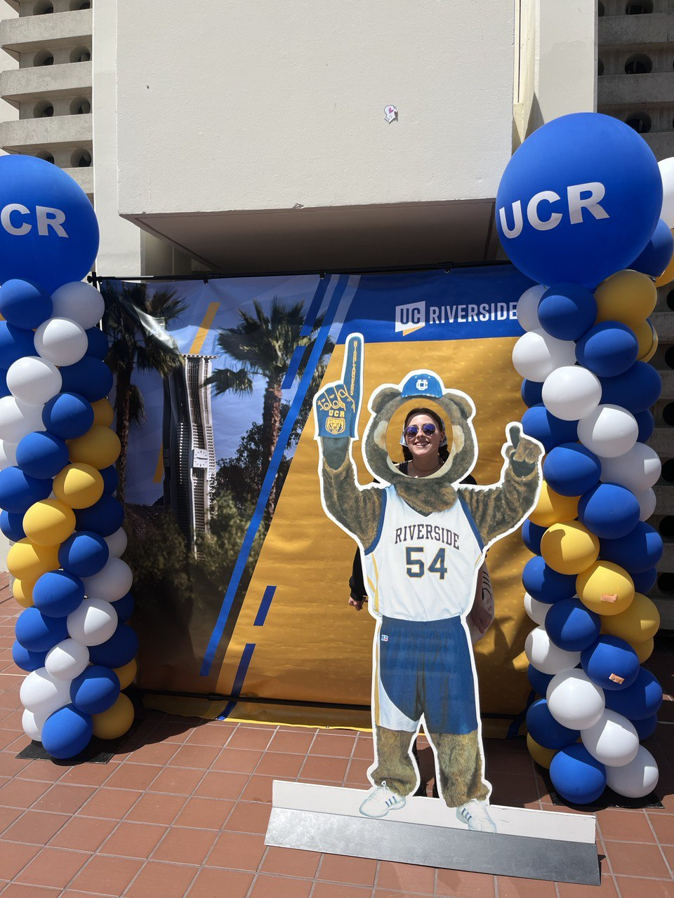
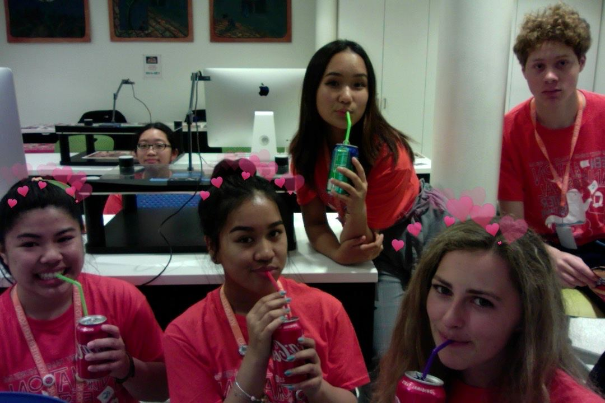

I started my job experience when I was in high school, I was part of an internship at the Walt Disney Museum in San Francisco. I would assist art teachers in doing lessons and demonstrations for children and I would assist on the tours we hosted there. Then I went on to do a fellowship at the Boys and Girls Club where I would help kids with their homework or be there for them if they wanted to talk. My responsibilities included lesson plans and engaging kids in activities so they would stay on track. In addition, I would help facilitate STEAM activities and it was very rewarding to watch their faces light up with curiosity. Both of these experiences were so valuable to me and I learned a lot about working with kids and myself.
After that experience ended, I started my journey in customer service. I joined the team at American Eagle where I would become a sales associate in the Aerie Department. I would help people find bras that were comfortable for them and that was truly a rewarding feeling sometimes. I would help new mothers, trans women, and people in recovery find something that would best benefit them and make them feel confident. At the beginning of my experience, I was just a greeter, someone who just welcomed people into the store and make them know about the hot new deals that were currently in effect. However, I very quickly expanded to fitting room attendant and cashier. My favorite would be the fitting room attendant because I would form connections with the customers and suggest clothes that I think they would like. It would be a fun back and forth, I would give them clothes and they would show them off to me. Even though it was a very fast passed environment and at times stressful, I was so grateful to the customers that would come back just so I could help them. It really made my time there that much more special.
I rejoined the workforce at the height of COVID because I quickly learned how expensive college really was. At this time I joined the "essential workers" group when I started at Chipotle. This was my very first time working in the food service industry but because of my history with customer service, I already knew how to work in a fast-paced environment and how to speak to customers. Initially, it was very challenging to learn how to roll a burrito, but now I am trained in three positions: line, online orders, and cashier. My managers have recognized my hard work and desire to excel, so now I train all the newcomers as well. All my work experiences have helped me remain calm in stressful situations, build connections with new customers and continue those relations when they become recurring customers, and have a very strong work ethic. I am grateful for all my experiences because they have shaped me into the person I am today and I am very excited for all the future experiences that I have in store for me.
• Learned how to Deal with Money
• Good Communication with Coworkers and Management
• Safe Food Preparation and Presentation
• Built Loyalty and Connections with Customers
• Trained Newer Recruits
• Quick Learner
• Reliable Worker
• Retail Experience
• Customer Service
• Communication Skills
• Commercial Awareness
• Tutoring children ages 6-12
• Facilitating STEAM activities
• Lesson planning and organization
School
Volunteering
